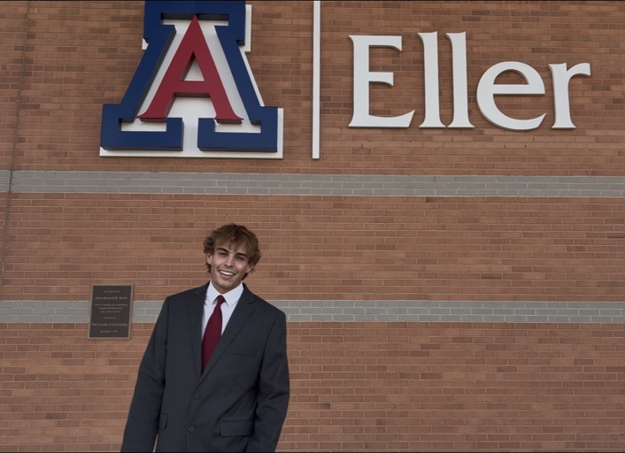
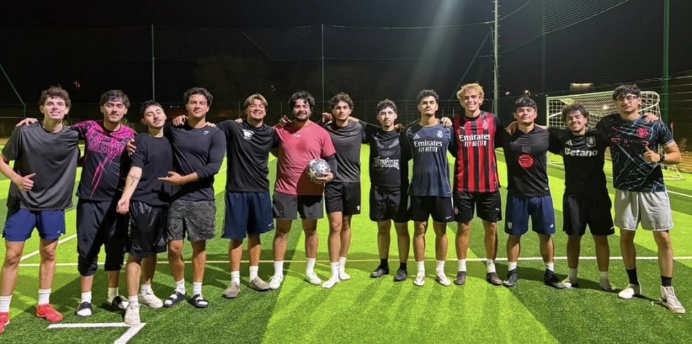
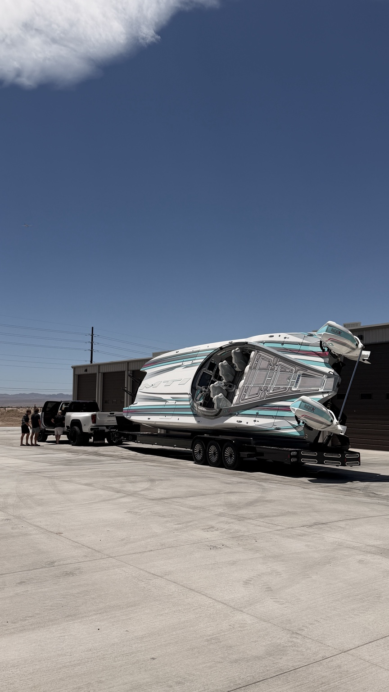
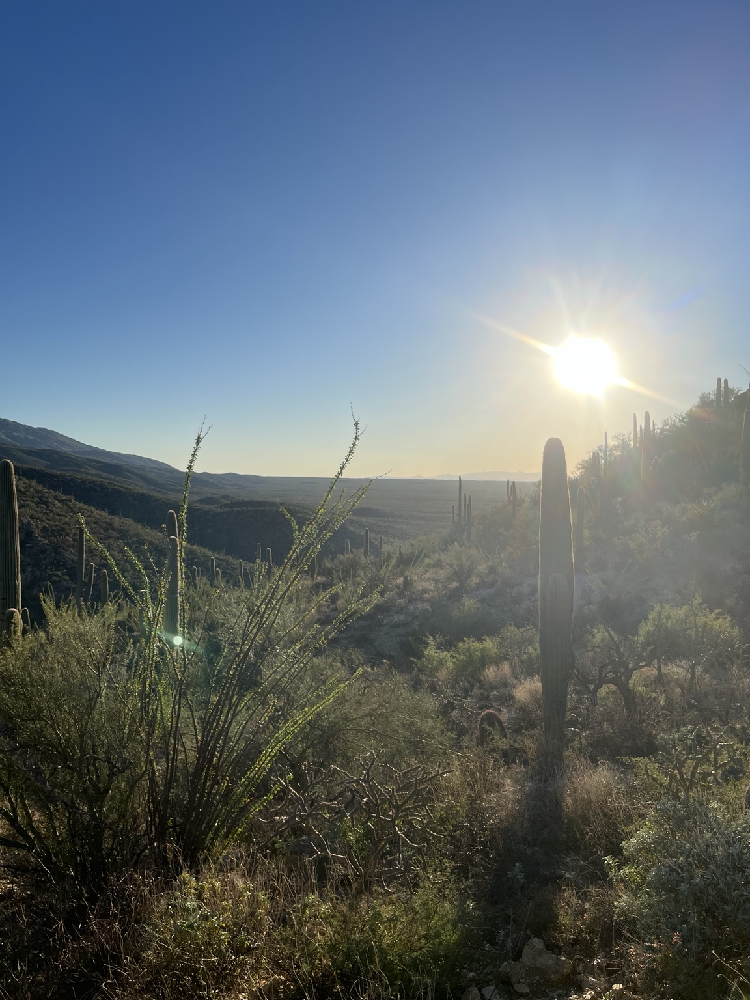
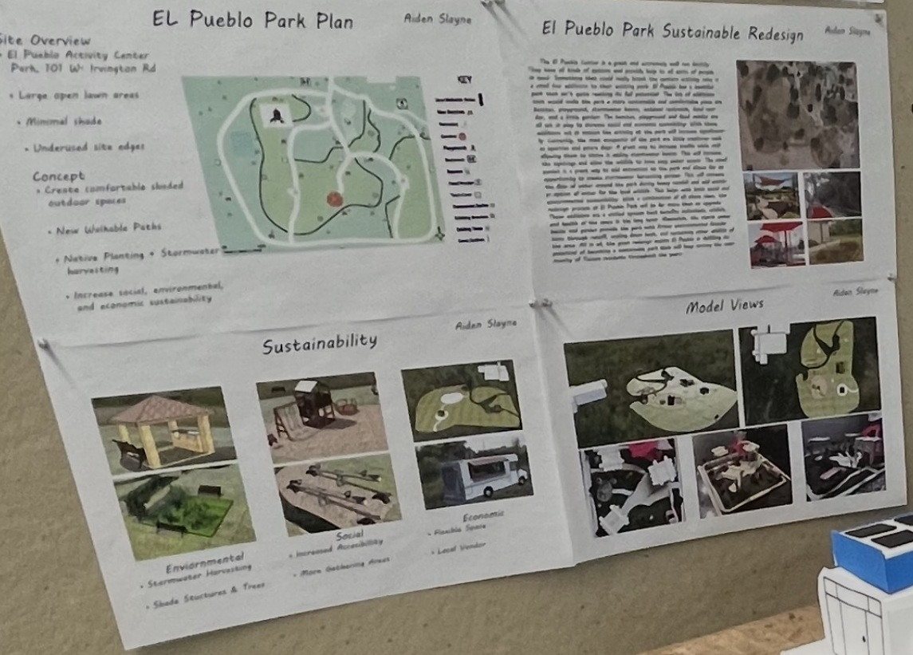
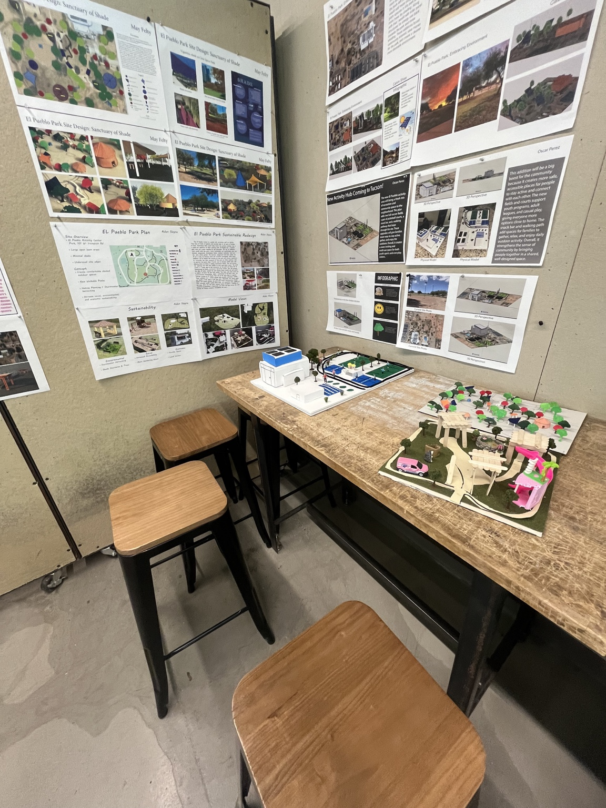
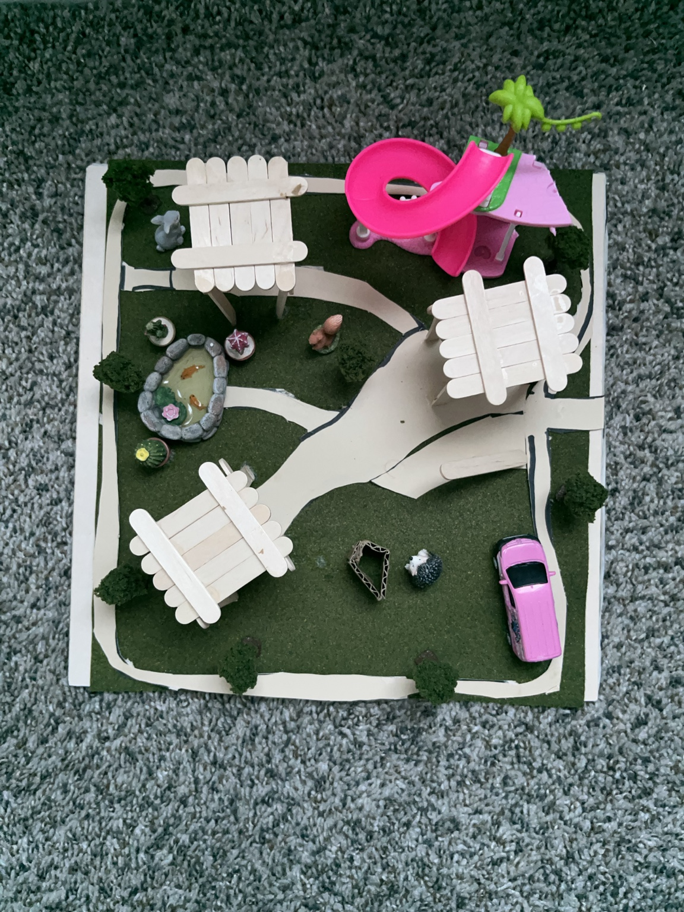

University of Arizona
Business Management major · Real Estate minor · Expected graduation May 2027
Hi, I'm Aiden. I'm a Business Management student with a minor in Real Estate, and I believe strong relationships are at the center of every great team and opportunity. Playing soccer my whole life helped shape that belief.
I'm building a career around communication, trust, and showing up for the people I work with.
I care about the work I do, but just as much about the people I do it with.
I'm studying Business Management at the University of Arizona's Eller College of Management, with a minor in Real Estate. My goal is to build a career where I can work with people, earn their trust, and keep learning.
I’ve played soccer for most of my life, and it has shaped how I think about commitment, accountability, and being part of something bigger than myself. Those lessons carry into the way I work with people and build relationships.
Whether I'm working with a team, helping a customer, or meeting someone new, I try to bring a positive attitude, communicate clearly, and follow through.

At the Eller College of Management, University of Arizona.
Experience that shaped meBusiness Management major · Real Estate minor · Expected graduation May 2027
Worked across multiple restaurant roles and provided neighborhood services, building adaptability and people skills.
I made this video to share a little more about who I am, what I've learned at Eller, and why teamwork and meaningful relationships matter to me.
Watch on YouTube ↗For recruiters in business, real estate, and investment services, I bring a relationship-first mindset, analytical thinking, and a willingness to grow through feedback. Here's what my assessments and team experiences taught me.
My SPI identifies an Analytical communication style. I see myself as calm, empathetic, curious, and relationship-focused.
My PRS also identifies an Analytical style, while peers describe me as easygoing, outgoing, self-confident, and a problem-solver.
I want to pair those relationship skills with stronger preparation, accountability, and the confidence to speak up.
Evidence: In my SPI, I selected empathetic, caring, curious, and hard-working as traits that describe me. Peer feedback highlighted my ability to connect with people and support the team.
Why it matters: Trust, loyalty, teamwork, and accountability are the values I want to be known for. Soccer taught me to rely on teammates; group presentations taught me that supporting people also means being prepared and following through. In a client-facing career, I want people to feel both comfortable with me and confident in my work.
Evidence: Both my self-perception inventory (SPI) and peer reputation survey (PRS) classified my communication style as Analytical. My SPI measured proactivity at −3.0 and reactivity at −1.0; my PRS measured proactivity at −3.0 and reactivity at −0.33. Peers also described me as outgoing and self-confident—traits I don't always emphasize when describing myself.
Same result in both assessments
Bars show the magnitude of negative scores; smaller bars are closer to zero.
Why it matters: The assessments agree that I tend to be thoughtful and measured, but peers see more social confidence in me than I sometimes recognize. My strategy is to keep listening carefully while sharing ideas earlier and more clearly in meetings and presentations.
Evidence: Across three rounds of team 360° feedback, my preparation/punctuality rating improved from 3.0 to 3.6 and work-quality score from 84 to 88. Teammates continued to value my positive relationships while challenging me to prepare more consistently and contribute my opinions.
Preparation/punctuality bars shown on a 5-point scale; work-quality bars on a 100-point scale. Only the first and final available values are plotted—no intermediate scores are estimated.
Why it matters: Being easy to work with isn't enough on its own. I started preparing earlier, learning the whole presentation rather than only my slides, and speaking up instead of automatically going with the flow. I plan to carry those habits into professional teams.
I'll continue seeking feedback, arriving prepared, and contributing my perspective while making room for others. My goal is to bring genuine relationships and dependable work to a career in business or real estate.
The experiences and people in my life have shaped how I work with others.

SoccerI've played soccer my whole life. It taught me to trust the people around me, communicate, and show up for something bigger than myself.

BoatingI love boating, but what sticks with me most is meeting people, hearing their stories, and building genuine connections.

HikingHiking around Arizona gives me a chance to reset, stay curious, and appreciate the place I call home.
Selected projects that show my design, communication, research, and presentation skills.



The project: For my real estate class, I redesigned El Pueblo Park in Tucson after identifying limited shade, open lawn areas, and underused spaces.
What I created: I designed a site plan, built a physical model, and presented a sustainable redesign with shaded gathering spaces, walkable paths, native landscaping, stormwater harvesting, accessible recreation, and space for local vendors.
What it shows: Independent site planning, sustainability thinking, model building, and visual communication—skills that connect directly to my interest in real estate.
Context: I wanted to introduce myself to future employers and professional contacts.
My contribution: I planned and assembled my story using on-camera speaking, photos, and footage from my school and personal experiences.
Skills demonstrated: Public speaking, digital storytelling, communication, and personal branding.
Why I chose it: It brings together my experiences and the relationships that shape how I approach work.
Our team examined how product reliability and customer trust affect Keurig Dr Pepper's stakeholders. I researched and presented the business partners section, focusing on retailers, coffee partners, and brand partners.
Skills: Research, stakeholder analysis, teamwork, and public speaking.
What I do: Outside of class, I enjoy creating and editing videos for my YouTube channel, from putting together footage to shaping the final story.
Audience: My videos have earned over 15,000 total views.
Skills: Video editing, creativity, digital communication, and learning what connects with an audience.
My resume highlights the work, teamwork, and customer-facing experiences that have helped me grow professionally.
Updated to reflect my Business Management major and Real Estate minor.
Read my resume below, or download a copy using the buttons above.
Whether you want to talk about business, real estate, or a potential opportunity, I'd be happy to connect. Relationships are important to me, and I'm always open to meeting new people.
Based in Tucson, Arizona · University of Arizona